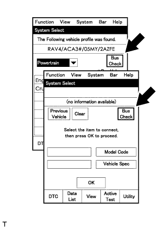
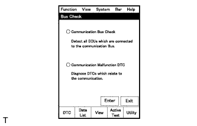
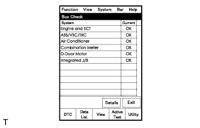
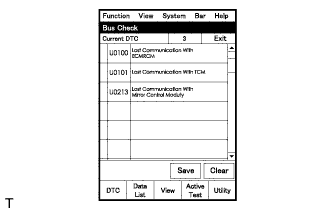
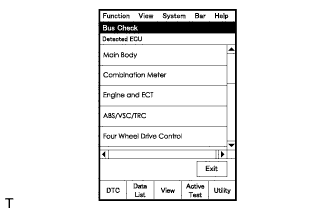
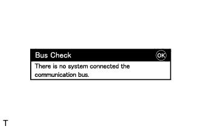

CAN COMMUNICATION SYSTEM (for LHD) > DIAGNOSIS SYSTEM |
| BUS CHECK (COMMUNICATION MALFUNCTION ECU) |
 |
Select "Bus Check" from the "System Select" screen on the intelligent tester.
 |
Select "Communication Malfunction DTC" from the "Bus Check" screen, and then select "Enter".
 |
Select the system of the DTC to be checked and select "Details".
 |
CAN communication system DTCs are displayed.
| BUS CHECK (COMMUNICATION BUS CHECK) |
Select "Communication Bus Check" from the "Bus Check" screen.
 |
The screen displays the ECUs and sensors that are properly connected to the CAN communication system.
 |
"There is no system connected to the communication bus" is displayed if there are no ECUs or sensors connected to the CAN bus.
| CHECK INSTALLED SYSTEMS (ECUS AND SENSORS) THAT USE CAN COMMUNICATION |
System (ECUs and sensors) that use CAN communication vary depending on the optional settings of the vehicle. Check which systems (ECUs and sensors) are installed on the vehicle.
| ECU/Sensor Name (Intelligent Tester Display) | Installed to |
| Skid control ECU (ABS/VSC/TRC) | All vehicles |
| Air conditioning amplifier (Air Conditioner) | All vehicles |
| ECM (Engine) | All vehicles |
| Main body ECU (Cowl Side Junction Block LH) (Main Body) | All vehicles |
| Combination meter (Combination Meter) | All vehicles |
| Center airbag sensor (SRS Airbag) | All vehicles |
| Multi-display (AVN) | Vehicles with navigation system |
| Steering angle sensor (Steering Angle Sensor) | All vehicles |
| Yaw rate sensor (Yaw Rate / Deceleration Sensor) | All vehicles |
| Seat belt control ECU (Pre-crash Seat Belt) | Vehicle with pre-crash safety system |
| Clearance warning ECU (Clearance Sonar) | Vehicle with TOYOTA parking assist-sensor system |
| Outer mirror control ECU (Driver Door/Mirror) | Vehicles with seat memory |
| Multiplex tilt and telescopic ECU (Tilt&Telescopic) | Vehicles with power tilt and power telescopic steering column system |
| Certification ECU (Smart Key ECU) (Entry & Smart / Wireless Tuner) | All vehicles |
| Position control ECU and switch (Driver Seat) | Vehicles with seat memory |
| Network gateway ECU (CAN Gateway) | All vehicles |
| 4WD control ECU (Four Wheel Drive Control) | All vehicles |
| Parking assist ECU (Parking Assist Monitor) | Vehicles with parking assist monitor system |
| Suspension control ECU (AHC) | Vehicles with active height control suspension |
| Windshield wiper ECU (Combination Switch) | Vehicles with rain sensor |
| Steering control ECU (VGRS) | Vehicles with variable gear ratio steering system |
| DTC TABLE BY ECU |
MASTER CYLINDER SOLENOID (SKID CONTROL ECU)
| DTC Code | Detection Item |
| U0073 | Control Module Communication Bus OFF |
| U0100 | Lost Communication with ECM/PCM "A" |
| U0114/38 | Lost Communication with 4WD Control ECU |
| U0123 | Lost Communication with Yaw Rate Sensor Module |
| U0124 | Lost Communication with Lateral Acceleration Sensor Module |
| U0126 | Lost Communication with Steering Angle Sensor Module |
| U0130 | Lost Communication with Steering Effort Control Module |
ECM
| DTC Code | Detection Item |
| U0100 | Lost Communication with ECM/PCM "A" |
MAIN BODY ECU (COWL SIDE JUNCTION BLOCK LH)
| DTC Code | Detection Item |
| U0199 | Lost Communication with "Door Control Module A" |
| U0208 | Lost Communication with "Seat Control Module A" |
| U0327 | Software Incompatibility with Vehicle Security Control Module |
| U1002 (CAN No. 2 BUS) | Lost Communication with Gateway Module (Network Gateway ECU) |
| U1111 | Lost Communication with Front Controller Module |
| U1115 | Lost Communication with Tilt and Telescopic Module |
COMBINATION METER
| DTC Code | Detection Item |
| U0100 | Lost Communication with ECM/PCM "A" |
| U0129 | Lost Communication with Brake System Control Module |
SEAT BELT CONTROL ECU
For vehicles with the pre-crash safety system only.
| DTC Code | Detection Item |
| U0100 | Lost Communication with ECM/PCM "A" |
| U0122 | Lost Communication with Vehicle Dynamics Control Module |
| U0151 | Lost Communication with Airbag ECU |
CLEARANCE WARNING ECU
For vehicles with the TOYOTA parking assist-sensor system only.
| DTC Code | Detection Item |
| C1AEF | Shift Position Information |
| U0155 | Lost Communication with Instrument Panel Cluster Control Module |
MULTIPLEX TILT AND TELESCOPIC ECU
For vehicles with the power tilt and power telescopic steering column system only.
| DTC Code | Detection Item |
| B2621 | Communication Interruption |
| B2624* | Vehicle Speed Malfunction |
MULTI-DISPLAY
For vehicles with the navigation system only.
OUTER MIRROR CONTROL ECU
For vehicles with the seat memory only.
CENTER AIRBAG SENSOR
CERTIFICATION ECU (SMART KEY ECU)
AIR CONDITIONING AMPLIFIER
| DTC Code | Detection Item |
| B1499 | Multiplex Communication Circuit |
POSITION CONTROL ECU AND SWITCH
For vehicles with the seat memory only.
NETWORK GATEWAY ECU
| DTC Code | Detection Item |
| U0114/38 | Lost Communication with 4WD Control ECU |
| U0122 | Lost Communication with Vehicle Dynamics Control Module |
| U0123 | Lost Communication with Yaw Rate Sensor Module |
| U0126 | Lost Communication with Steering Angle Sensor Module |
| U0130 | Lost Communication with Steering Effort Control Module |
| U0132 | Lost Communication with Suspension Control ECU |
| U1002 (CAN MS BUS) | Lost Communication with Gateway Module |
| U1100 | Lost Communication with Seat Belt Control Module |
| U1110 | Lost Communication with Clearance Sonar Module |
| U1126 | Lost Communication with Parking Assist ECU |
4WD CONTROL ECU
PARKING ASSIST ECU
For vehicles with the parking assist monitor system only.
SUSPENSION CONTROL ECU
For vehicles with the active height control suspension only.
| DTC Code | Detection Item |
| U0100 | Lost Communication with ECM/PCM "A" |
| U0101 | Lost Communication with TCM |
| U0114/38 | Lost Communication with 4WD Control ECU |
| U0122 | Lost Communication with Vehicle Dynamics Control Module |
| U0124 | Lost Communication with Lateral Acceleration Sensor Module |
| U0126 | Lost Communication with Steering Angle Sensor Module |
| U0130 | Lost Communication with Steering Effort Control Module |
| U0140 | Lost Communication with Main Body ECU |
WINDSHIELD WIPER ECU
For vehicles with the rain sensor only.
STEERING CONTROL ECU
For vehicles with the variable gear ratio steering system only.
| DTC Code | Detection Item |
| U0100 | Lost Communication with ECM / PCM "A" |
| U0122 | Lost Communication with Vehicle Dynamics Control Module |
| U0126 | Lost Communication with Steering Angle Sensor Module |
| DTC COMBINATION TABLE |
| Output from | Output DTC | Detection Item | Target ECU | Detected Communication Stop Mode | |||
| V Bus | |||||||
| Main Body ECU (Cowl Side Junction Block LH) Communication Stop Mode | Combination Meter Communication Stop Mode | Center Airbag Sensor Communication Stop Mode | Air Conditioning Amplifier Communication Stop Mode | ||||
| Master Cylinder Solenoid (Skid Control ECU) | U0123 | Lost Communication with Yaw Rate Sensor Module | Yaw Rate Sensor | - | - | - | - |
| U0124 | Lost Communication with Lateral Acceleration Sensor Module | - | - | - | - | ||
| U0114/38 | Lost Communication with 4WD Control ECU | 4WD Control ECU | - | - | - | - | |
| U0126 | Lost Communication with Steering Angle Sensor Module | Steering Angle Sensor | - | - | - | - | |
| U0130 | Lost Communication with Steering Effect Control Module | Steering Control ECU | - | - | - | - | |
| U0073 | Control Module Communication Bus OFF |
| - | - | - | - | |
| Multiplex Tilt and Telescopic ECU | B2621 | Communication Interruption |
| - | - | - | - |
| B2624 | Vehicle Speed Malfunction | Combination Meter | ○*1 | ○ | X | X | |
| Suspension Control ECU | U0100 | Lost Communication with ECM/PCM "A" | ECM | X | X | X | X |
| U0122 | Lost Communication with Vehicle Dynamics Control Module | Master Cylinder Solenoid (Skid Control ECU) | - | - | - | - | |
| U0126 | Lost Communication with Steering Angle Sensor Module | Steering Angle Sensor | - | - | - | - | |
| U0130 | Lost Communication with Steering Effect Control Module | Steering Control ECU | - | - | - | - | |
| U0124 | Lost Communication with Lateral Acceleration Sensor Module | Yaw Rate Sensor | - | - | - | - | |
| U0140 | Lost Communication with Main Body ECU | Main Body ECU (Cowl Side Junction Block LH) | ○ | X | X | X | |
| U0114/38 | Lost Communication with 4WD Control ECU | 4WD Control ECU | - | - | - | - | |
| U0101 | Lost Communication with TCM | ECM | X | X | X | X | |
| Air Conditioning Amplifier | B1499 | Multiplex Communication Circuit |
| ○ | ○ | X | ○*1 |
| Steering Control ECU | U0126 | Lost Communication with Steering Angle Sensor Module | Steering Angle Sensor | - | - | - | - |
| U0122 | Lost Communication with Vehicle Dynamics Control Module | Master Cylinder Solenoid (Skid Control ECU) | - | - | - | - | |
| U0100 | Lost Communication with ECM/PCM "A" | ECM | X | X | X | X | |
| Clearance Warning ECU | C1AEF | Shift Position Information | ECM | X | X | X | X |
| U0155 | Lost Communication with Instrument Panel Cluster Control Module (Combination Meter) | Combination Meter | X | ○ | X | X | |
| Seat Belt Control ECU | U0122 | Lost Communication with Vehicle Dynamics Control Module | Master Cylinder Solenoid (Skid Control ECU) | - | - | - | - |
| U0151 | Lost Communication with Airbag ECU | Center Airbag Sensor | X | X | ○ | X | |
| Combination Meter | U0129 | Lost Communication with Brake System Control Module | Master Cylinder Solenoid (Skid Control ECU) | X | ○*1 | X | X |
| U0100 | Lost Communication with ECM/PCM "A" | ECM | X | ○*1 | X | X | |
| Main Body ECU (Cowl Side Junction Block LH) | U1002 (CAN MS BUS) | Lost Communication with Gateway Module (Main Body ECU) | MS Bus Network Malfunction | - | - | - | - |
| U0327 | Software Incompatibility with Vehicle Security Control Module | Certification ECU (Smart Key ECU) | - | - | - | - | |
| U0208 | Lost Communication with "Seat Control Module A" | Position Control ECU and Switch | - | - | - | - | |
| U1115 | Lost Communication with Tilt and Telescopic Module | Multiplex Tilt and Telescopic ECU | - | - | - | - | |
| U1111 | Lost Communication with Front Controller Module | Windshield Wiper ECU | - | - | - | - | |
| U0199 | Lost Communication with "Door Control Module A" | Outer Mirror Control ECU | - | - | - | - | |
| Network Gateway ECU | U1100 | Lost Communication with Seat Belt Control Module | Seat Belt Control ECU | - | - | - | - |
| U0132 | Lost Communication with Suspension Control ECU | Suspension Control ECU | - | - | - | - | |
| U0130 | Lost Communication with Steering Effect Control Module | Steering Control ECU | - | - | - | - | |
| U0123 | Lost Communication with Yaw Rate Sensor Module | Yaw Rate Sensor | - | - | - | - | |
| U0126 | Lost Communication with Steering Angle Sensor Module | Steering Angle Sensor | - | - | - | - | |
| U0114/38 | Lost Communication with 4WD Control ECU | 4WD Control ECU | - | - | - | - | |
| U0122 | Lost Communication with Vehicle Dynamics Control Module | Master Cylinder Solenoid (Skid Control ECU) | - | - | - | - | |
| U1126 | Lost Communication with Parking Assist ECU | Parking Assist ECU | - | - | - | - | |
| U1110 | Lost Communication with Clearance Sonar Module | Clearance Warning ECU | - | - | - | - | |
| U1002 (CAN No. 2 BUS) | Lost Communication with Gateway Module (Network Gateway ECU) | Movement Control Bus Network Malfunction | - | - | - | - | |
| Output from | Output DTC | Detection Item | Target ECU | Detected Communication Stop Mode | ||
| V Bus | ||||||
| Multi-display Communication Stop Mode | ECM Communication Stop Mode | Network Gateway ECU Communication Stop Mode | ||||
| Master Cylinder Solenoid (Skid Control ECU) | U0123 | Lost Communication with Yaw Rate Sensor Module | Yaw Rate Sensor | - | - | - |
| U0124 | Lost Communication with Lateral Acceleration Sensor Module | - | - | - | ||
| U0100 | Lost Communication with ECM/PCM "A" | ECM | X | ○*2 | ○*1, *2 | |
| U0126 | Lost Communication with Steering Angle Sensor Module | Steering Angle Sensor | - | - | - | |
| U0130 | Lost Communication with Steering Effect Control Module | Steering Control ECU | - | - | - | |
| U0073 | Control Module Communication Bus OFF |
| - | - | - | |
| Multiplex Tilt and Telescopic ECU | B2621 | Communication Interruption |
| - | - | - |
| B2624 | Vehicle Speed Malfunction | Combination Meter | X | X | X | |
| Suspension Control ECU | U0100 | Lost Communication with ECM/PCM "A" | ECM | X | ○*3 | ○*1, *3 |
| U0122 | Lost Communication with Vehicle Dynamics Control Module | Master Cylinder Solenoid (Skid Control ECU) | - | - | - | |
| U0126 | Lost Communication with Steering Angle Sensor Module | Steering Angle Sensor | - | - | - | |
| U0130 | Lost Communication with Steering Effect Control Module | Steering Control ECU | - | - | - | |
| U0124 | Lost Communication with Lateral Acceleration Sensor Module | Yaw Rate Sensor | - | - | - | |
| U0140 | Lost Communication with Main Body ECU | Main Body ECU (Cowl Side Junction Block LH) | X | X | ○ | |
| U0114/38 | Lost Communication with 4WD Control ECU | 4WD Control ECU | - | - | - | |
| U0101 | Lost Communication with TCM | ECM | X | ○*3 | ○*1, *3 | |
| Air Conditioning Amplifier | B1499 | Multiplex Communication Circuit |
| X | X | X |
| Steering Control ECU | U0126 | Lost Communication with Steering Angle Sensor Module | Steering Angle Sensor | - | - | - |
| U0122 | Lost Communication with Vehicle Dynamics Control Module | Master Cylinder Solenoid (Skid Control ECU) | - | - | - | |
| U0100 | Lost Communication with ECM/PCM "A" | ECM | X | ○ | ○*1 | |
| Clearance Warning ECU | C1AEF | Shift Position Information | ECM | X | ○ | ○*1 |
| U0155 | Lost Communication with Instrument Panel Cluster Control Module (Combination Meter) | Combination Meter | X | X | ○*1 | |
| Seat Belt Control ECU | U0122 | Lost Communication with Vehicle Dynamics Control Module | Master Cylinder Solenoid (Skid Control ECU) | - | - | - |
| U0151 | Lost Communication with Airbag ECU | Center Airbag Sensor | X | X | ○*1 | |
| Combination Meter | U0129 | Lost Communication with Brake System Control Module | Master Cylinder Solenoid (Skid Control ECU) | X | X | ○*1 |
| U0100 | Lost Communication with ECM/PCM "A" | ECM | X | ○ | X | |
| Main Body ECU (Cowl Side Junction Block LH) | U1002 (CAN MS BUS) | Lost Communication with Gateway Module (Main Body ECU) | MS Bus Network Malfunction | - | - | - |
| U0327 | Software Incompatibility with Vehicle Security Control Module | Certification ECU (Smart Key ECU) | - | - | - | |
| U0208 | Lost Communication with "Seat Control Module A" | Position Control ECU and Switch | - | - | - | |
| U1115 | Lost Communication with Tilt and Telescopic Module | Multiplex Tilt and Telescopic ECU | - | - | - | |
| U1111 | Lost Communication with Front Controller Module | Windshield Wiper ECU | - | - | - | |
| U0199 | Lost Communication with "Door Control Module A" | Outer Mirror Control ECU | - | - | - | |
| Network Gateway ECU | U1100 | Lost Communication with Seat Belt Control Module | Seat Belt Control ECU | - | - | - |
| U0132 | Lost Communication with Suspension Control ECU | Suspension Control ECU | - | - | - | |
| U0130 | Lost Communication with Steering Effect Control Module | Steering Control ECU | - | - | - | |
| U0123 | Lost Communication with Yaw Rate Sensor Module | Yaw Rate Sensor | - | - | - | |
| U0126 | Lost Communication with Steering Angle Sensor Module | Steering Angle Sensor | - | - | - | |
| U0114/38 | Lost Communication with 4WD Control ECU | 4WD Control ECU | - | - | - | |
| U0122 | Lost Communication with Vehicle Dynamics Control Module | Master Cylinder Solenoid (Skid Control ECU) | - | - | - | |
| U1126 | Lost Communication with Parking Assist ECU | Parking Assist ECU | - | - | - | |
| U1110 | Lost Communication with Clearance Sonar Module | Clearance Warning ECU | - | - | - | |
| U1002 (CAN No. 2 BUS) | Lost Communication with Gateway Module (Network Gateway ECU) | Movement Control Bus Network Malfunction | - | - | - | |
| Output from | Output DTC | Detection Item | Target ECU | Detected Communication Stop Mode | |||
| Movement Control Bus | |||||||
| Network Gateway ECU Communication Stop Mode | Clearance Warning ECU Communication Stop Mode | Parking Assist ECU Communication Stop Mode | Skid Control ECU Communication Stop Mode | ||||
| Master Cylinder Solenoid (Skid Control ECU) | U0123 | Lost Communication with Yaw Rate Sensor Module | Yaw Rate Sensor | X | X | X | ○*1 |
| U0124 | Lost Communication with Lateral Acceleration Sensor Module | X | X | X | ○*1 | ||
| U0114/38 | Lost Communication with 4WD Control ECU | 4WD Control ECU | X | X | X | ○*1 | |
| U0100 | Lost Communication with ECM/PCM "A" | ECM | ○*1, *2 | X | X | ○*1 | |
| U0126 | Lost Communication with Steering Angle Sensor Module | Steering Angle Sensor | X | X | X | ○*1 | |
| U0130 | Lost Communication with Steering Effect Control Module | Steering Control ECU | X | X | X | ○*1 | |
| U0073 | Control Module Communication Bus OFF |
| X | X | X | ○*1 | |
| Multiplex Tilt and Telescopic ECU | B2621 | Communication Interruption |
| - | - | - | - |
| B2624 | Vehicle Speed Malfunction | Combination Meter | - | - | - | - | |
| Suspension Control ECU | U0100 | Lost Communication with ECM/PCM "A" | ECM | ○*1, *3 | X | X | X |
| U0122 | Lost Communication with Vehicle Dynamics Control Module | Master Cylinder Solenoid (Skid Control ECU) | X | X | X | ○ | |
| U0126 | Lost Communication with Steering Angle Sensor Module | Steering Angle Sensor | X | X | X | X | |
| U0130 | Lost Communication with Steering Effect Control Module | Steering Control ECU | X | X | X | X | |
| U0124 | Lost Communication with Lateral Acceleration Sensor Module | Yaw Rate Sensor | X | X | X | X | |
| U0140 | Lost Communication with Main Body ECU | Main Body ECU (Cowl Side Junction Block LH) | ○*1 | X | X | X | |
| U0114/38 | Lost Communication with 4WD Control ECU | 4WD Control ECU | X | X | X | X | |
| U0101 | Lost Communication with TCM | ECM | ○*1, *3 | X | X | X | |
| Air Conditioning Amplifier | B1499 | Multiplex Communication Circuit |
| - | - | - | - |
| Steering Control ECU | U0126 | Lost Communication with Steering Angle Sensor Module | Steering Angle Sensor | X | X | X | X |
| U0122 | Lost Communication with Vehicle Dynamics Control Module | Master Cylinder Solenoid (Skid Control ECU) | X | X | X | ○ | |
| U0100 | Lost Communication with ECM/PCM "A" | ECM | ○*1 | X | X | X | |
| Clearance Warning ECU | C1AEF | Shift Position Information | ECM | ○*1 | ○*1 | X | X |
| U0155 | Lost Communication with Instrument Panel Cluster Control Module (Combination Meter) | Combination Meter | ○*1 | ○*1 | X | X | |
| Seat Belt Control ECU | U0122 | Lost Communication with Vehicle Dynamics Control Module | Master Cylinder Solenoid (Skid Control ECU) | X | X | X | ○ |
| U0151 | Lost Communication with Airbag ECU | Center Airbag Sensor | ○*1 | X | X | X | |
| Combination Meter | U0129 | Lost Communication with Brake System Control Module | Master Cylinder Solenoid (Skid Control ECU) | ○*1 | X | X | ○ |
| U0100 | Lost Communication with ECM/PCM "A" | ECM | - | - | - | - | |
| Main Body ECU (Cowl Side Junction Block LH) | U1002 (CAN MS BUS) | Lost Communication with Gateway Module (Main Body ECU) | MS Bus Network Malfunction | - | - | - | - |
| U0327 | Software Incompatibility with Vehicle Security Control Module | Certification ECU (Smart Key ECU) | - | - | - | - | |
| U0208 | Lost Communication with "Seat Control Module A" | Position Control ECU and Switch | - | - | - | - | |
| U1115 | Lost Communication with Tilt and Telescopic Module | Multiplex Tilt and Telescopic ECU | - | - | - | - | |
| U1111 | Lost Communication with Front Controller Module | Windshield Wiper ECU | - | - | - | - | |
| U0199 | Lost Communication with "Door Control Module A" | Outer Mirror Control ECU | - | - | - | - | |
| Network Gateway ECU | U1100 | Lost Communication with Seat Belt Control Module | Seat Belt Control ECU | ○*1, *4 | X | X | X |
| U0132 | Lost Communication with Suspension Control ECU | Suspension Control ECU | ○*1, *4 | X | X | X | |
| U0130 | Lost Communication with Steering Effect Control Module | Steering Control ECU | ○*1, *4 | X | X | X | |
| U0123 | Lost Communication with Yaw Rate Sensor Module | Yaw Rate Sensor | ○*1, *4 | X | X | X | |
| U0126 | Lost Communication with Steering Angle Sensor Module | Steering Angle Sensor | ○*1, *4 | X | X | X | |
| U0114/38 | Lost Communication with 4WD Control ECU | 4WD Control ECU | ○*1, *4 | X | X | X | |
| U0122 | Lost Communication with Vehicle Dynamics Control Module | Master Cylinder Solenoid (Skid Control ECU) | ○*1, *4 | X | X | ○ | |
| U1126 | Lost Communication with Parking Assist ECU | Parking Assist ECU | ○*1, *4 | X | ○ | X | |
| U1110 | Lost Communication with Clearance Sonar Module | Clearance Warning ECU | ○*1, *4 | ○ | X | X | |
| U1002 (CAN No. 2 BUS) | Lost Communication with Gateway Module (Network Gateway ECU) | Movement Control Bus Network Malfunction | ○*1, *4 | X | X | X | |
| Output from | Output DTC | Detection Item | Target ECU | Detected Communication Stop Mode | ||
| Movement Control Bus | ||||||
| 4WD Control ECU Communication Stop Mode | Steering Angle Sensor Communication Stop Mode | Yaw Rate Sensor Communication Stop Mode | ||||
| Master Cylinder Solenoid (Skid Control ECU) | U0123 | Lost Communication with Yaw Rate Sensor Module | Yaw Rate Sensor | X | X | ○ |
| U0124 | Lost Communication with Lateral Acceleration Sensor Module | X | X | ○ | ||
| U0100 | Lost Communication with ECM/PCM "A" | ECM | X | X | X | |
| U0126 | Lost Communication with Steering Angle Sensor Module | Steering Angle Sensor | X | ○ | X | |
| U0114/38 | Lost Communication with 4WD Control ECU | 4WD Control ECU | ○ | X | X | |
| U0130 | Lost Communication with Steering Effect Control Module | Steering Control ECU | X | X | X | |
| U0073 | Control Module Communication Bus OFF |
| X | ○ | ○ | |
| Multiplex Tilt and Telescopic ECU | B2621 | Communication Interruption |
| - | - | - |
| B2624 | Vehicle Speed Malfunction | Combination Meter | - | - | - | |
| Suspension Control ECU | U0100 | Lost Communication with ECM/PCM "A" | ECM | X | X | X |
| U0122 | Lost Communication with Vehicle Dynamics Control Module | Master Cylinder Solenoid (Skid Control ECU) | X | X | X | |
| U0126 | Lost Communication with Steering Angle Sensor Module | Steering Angle Sensor | X | ○ | X | |
| U0130 | Lost Communication with Steering Effect Control Module | Steering Control ECU | X | X | X | |
| U0124 | Lost Communication with Lateral Acceleration Sensor Module | Yaw Rate Sensor | X | X | ○ | |
| U0140 | Lost Communication with Main Body ECU | Main Body ECU (Cowl Side Junction Block LH) | X | X | X | |
| U0114/38 | Lost Communication with 4WD Control ECU | 4WD Control ECU | ○*3 | X | X | |
| U0101 | Lost Communication with TCM | ECM | X | X | X | |
| Air Conditioning Amplifier | B1499 | Multiplex Communication Circuit |
| - | - | - |
| Steering Control ECU | U0126 | Lost Communication with Steering Angle Sensor Module | Steering Angle Sensor | X | ○ | X |
| U0122 | Lost Communication with Vehicle Dynamics Control Module | Master Cylinder Solenoid (Skid Control ECU) | X | X | X | |
| U0100 | Lost Communication with ECM/PCM "A" | ECM | X | X | X | |
| Clearance Warning ECU | C1AEF | Shift Position Information | ECM | X | X | X |
| U0155 | Lost Communication with Instrument Panel Cluster Control Module (Combination Meter) | Combination Meter | X | X | X | |
| Seat Belt Control ECU | U0122 | Lost Communication with Vehicle Dynamics Control Module | Master Cylinder Solenoid (Skid Control ECU) | X | X | X |
| U0151 | Lost Communication with Airbag ECU | Center Airbag Sensor | X | X | X | |
| Combination Meter | U0129 | Lost Communication with Brake System Control Module | Master Cylinder Solenoid (Skid Control ECU) | X | X | X |
| U0100 | Lost Communication with ECM/PCM "A" | ECM | - | - | - | |
| Main Body ECU (Cowl Side Junction Block LH) | U1002 (CAN MS BUS) | Lost Communication with Gateway Module (Main Body ECU) | MS Bus Network Malfunction | - | - | - |
| U0327 | Software Incompatibility with Vehicle Security Control Module | Certification ECU (Smart Key ECU) | - | - | - | |
| U0208 | Lost Communication with "Seat Control Module A" | Position Control ECU and Switch | - | - | - | |
| U1115 | Lost Communication with Tilt and Telescopic Module | Multiplex Tilt and Telescopic ECU | - | - | - | |
| U1111 | Lost Communication with Front Controller Module | Windshield Wiper ECU | - | - | - | |
| U0199 | Lost Communication with "Door Control Module A" | Outer Mirror Control ECU | - | - | - | |
| Network Gateway ECU | U1100 | Lost Communication with Seat Belt Control Module | Seat Belt Control ECU | X | X | X |
| U0132 | Lost Communication with Suspension Control ECU | Suspension Control ECU | X | X | X | |
| U0130 | Lost Communication with Steering Effect Control Module | Steering Control ECU | X | X | X | |
| U0123 | Lost Communication with Yaw Rate Sensor Module | Yaw Rate Sensor | X | X | ○ | |
| U0126 | Lost Communication with Steering Angle Sensor Module | Steering Angle Sensor | X | ○ | X | |
| U0114/38 | Lost Communication with 4WD Control ECU | 4WD Control ECU | ○ | X | X | |
| U0122 | Lost Communication with Vehicle Dynamics Control Module | Master Cylinder Solenoid (Skid Control ECU) | X | X | X | |
| U1126 | Lost Communication with Parking Assist ECU | Parking Assist ECU | X | X | X | |
| U1110 | Lost Communication with Clearance Sonar Module | Clearance Warning ECU | X | X | X | |
| U1002 (CAN No. 2 BUS) | Lost Communication with Gateway Module (Network Gateway ECU) | Movement Control Bus Network Malfunction | X | X | X | |
| Output from | Output DTC | Detection Item | Target ECU | Detected Communication Stop Mode | ||
| Movement Control Bus | ||||||
| Steering Control ECU Communication Stop Mode | Suspension Control ECU Communication Stop Mode | Seat Belt Control ECU Communication Stop Mode | ||||
| Master Cylinder Solenoid (Skid Control ECU) | U0123 | Lost Communication with Yaw Rate Sensor Module | Yaw Rate Sensor | X | X | X |
| U0124 | Lost Communication with Lateral Acceleration Sensor Module | X | X | X | ||
| U0100 | Lost Communication with ECM/PCM "A" | ECM | X | X | X | |
| U0126 | Lost Communication with Steering Angle Sensor Module | Steering Angle Sensor | X | X | X | |
| U0114/38 | Lost Communication with 4WD Control ECU | 4WD Control ECU | X | X | X | |
| U0130 | Lost Communication with Steering Effect Control Module | Steering Control ECU | ○ | X | X | |
| U0073 | Control Module Communication Bus OFF |
| ○ | X | X | |
| Multiplex Tilt and Telescopic ECU | B2621 | Communication Interruption |
| - | - | - |
| B2624 | Vehicle Speed Malfunction | Combination Meter | - | - | - | |
| Suspension Control ECU | U0100 | Lost Communication with ECM/PCM "A" | ECM | X | ○*1 | X |
| U0122 | Lost Communication with Vehicle Dynamics Control Module | Master Cylinder Solenoid (Skid Control ECU) | X | ○*1 | X | |
| U0126 | Lost Communication with Steering Angle Sensor Module | Steering Angle Sensor | X | ○*1 | X | |
| U0130 | Lost Communication with Steering Effect Control Module | Steering Control ECU | ○ | ○*1 | X | |
| U0124 | Lost Communication with Lateral Acceleration Sensor Module | Yaw Rate Sensor | X | ○*1 | X | |
| U0140 | Lost Communication with Main Body ECU | Main Body ECU (Cowl Side Junction Block LH) | X | ○*1 | X | |
| U0114/38 | Lost Communication with 4WD Control ECU | 4WD Control ECU | X | ○*1 | X | |
| U0101 | Lost Communication with TCM | ECM | X | ○*1 | X | |
| Air Conditioning Amplifier | B1499 | Multiplex Communication Circuit |
| - | - | - |
| Steering Control ECU | U0126 | Lost Communication with Steering Angle Sensor Module | Steering Angle Sensor | ○*1 | X | X |
| U0122 | Lost Communication with Vehicle Dynamics Control Module | Master Cylinder Solenoid (Skid Control ECU) | ○*1 | X | X | |
| U0100 | Lost Communication with ECM/PCM "A" | ECM | ○*1 | X | X | |
| Clearance Warning ECU | C1AEF | Shift Position Information | ECM | X | X | X |
| U0155 | Lost Communication with Instrument Panel Cluster Control Module (Combination Meter) | Combination Meter | X | X | X | |
| Seat Belt Control ECU | U0122 | Lost Communication with Vehicle Dynamics Control Module | Master Cylinder Solenoid (Skid Control ECU) | X | X | ○*1 |
| U0151 | Lost Communication with Airbag ECU | Center Airbag Sensor | X | X | ○*1 | |
| Combination Meter | U0129 | Lost Communication with Brake System Control Module | Master Cylinder Solenoid (Skid Control ECU) | X | X | X |
| U0100 | Lost Communication with ECM/PCM "A" | ECM | - | - | - | |
| Main Body ECU (Cowl Side Junction Block LH) | U1002 (CAN MS BUS) | Lost Communication with Gateway Module (Main Body ECU) | MS Bus Network Malfunction | - | - | - |
| U0327 | Software Incompatibility with Vehicle Security Control Module | Certification ECU (Smart Key ECU) | - | - | - | |
| U0208 | Lost Communication with "Seat Control Module A" | Position Control ECU and Switch | - | - | - | |
| U1115 | Lost Communication with Tilt and Telescopic Module | Multiplex Tilt and Telescopic ECU | - | - | - | |
| U1111 | Lost Communication with Front Controller Module | Windshield Wiper ECU | - | - | - | |
| U0199 | Lost Communication with "Door Control Module A" | Outer Mirror Control ECU | - | - | - | |
| Network Gateway ECU | U1100 | Lost Communication with Seat Belt Control Module | Seat Belt Control ECU | X | X | ○ |
| U0132 | Lost Communication with Suspension Control ECU | Suspension Control ECU | X | ○ | X | |
| U0130 | Lost Communication with Steering Effect Control Module | Steering Control ECU | ○ | X | X | |
| U0123 | Lost Communication with Yaw Rate Sensor Module | Yaw Rate Sensor | X | X | X | |
| U0126 | Lost Communication with Steering Angle Sensor Module | Steering Angle Sensor | X | X | X | |
| U0114/38 | Lost Communication with 4WD Control ECU | 4WD Control ECU | X | X | X | |
| U0122 | Lost Communication with Vehicle Dynamics Control Module | Master Cylinder Solenoid (Skid Control ECU) | X | X | X | |
| U1126 | Lost Communication with Parking Assist ECU | Parking Assist ECU | X | X | X | |
| U1110 | Lost Communication with Clearance Sonar Module | Clearance Warning ECU | X | X | X | |
| U1002 (CAN No. 2 BUS) | Lost Communication with Gateway Module (Network Gateway ECU) | Movement Control Bus Network Malfunction | X | X | X | |
| Output from | Output DTC | Detection Item | Target ECU | Detected Communication Stop Mode | ||
| MS Bus | ||||||
| Outer Mirror Control ECU Communication Stop Mode | Windshield Wiper ECU Communication Stop Mode | Multiplex Tilt and Telescopic ECU Communication Stop Mode | ||||
| Master Cylinder Solenoid (Skid Control ECU) | U0123 | Lost Communication with Yaw Rate Sensor Module | Yaw Rate Sensor | - | - | - |
| U0124 | Lost Communication with Lateral Acceleration Sensor Module | - | - | - | ||
| U0100 | Lost Communication with ECM/PCM "A" | ECM | - | - | - | |
| U0126 | Lost Communication with Steering Angle Sensor Module | Steering Angle Sensor | - | - | - | |
| U0114/38 | Lost Communication with 4WD Control ECU | 4WD Control ECU | - | - | - | |
| U0130 | Lost Communication with Steering Effect Control Module | Steering Control ECU | - | - | - | |
| U0073 | Control Module Communication Bus OFF |
| - | - | - | |
| Multiplex Tilt and Telescopic ECU | B2621 | Communication Interruption |
| X | X | ○*1 |
| B2624 | Vehicle Speed Malfunction | Combination Meter | X | X | ○*1 | |
| Suspension Control ECU | U0100 | Lost Communication with ECM/PCM "A" | ECM | - | - | - |
| U0122 | Lost Communication with Vehicle Dynamics Control Module | Master Cylinder Solenoid (Skid Control ECU) | - | - | - | |
| U0126 | Lost Communication with Steering Angle Sensor Module | Steering Angle Sensor | - | - | - | |
| U0130 | Lost Communication with Steering Effect Control Module | Steering Control ECU | - | - | - | |
| U0124 | Lost Communication with Lateral Acceleration Sensor Module | Yaw Rate Sensor | - | - | - | |
| U0140 | Lost Communication with Main Body ECU | Main Body ECU (Cowl Side Junction Block LH) | - | - | - | |
| U0114/38 | Lost Communication with 4WD Control ECU | 4WD Control ECU | - | - | - | |
| U0101 | Lost Communication with TCM | ECM | - | - | - | |
| Air Conditioning Amplifier | B1499 | Multiplex Communication Circuit |
| - | - | - |
| Steering Control ECU | U0126 | Lost Communication with Steering Angle Sensor Module | Steering Angle Sensor | - | - | - |
| U0122 | Lost Communication with Vehicle Dynamics Control Module | Master Cylinder Solenoid (Skid Control ECU) | - | - | - | |
| U0100 | Lost Communication with ECM/PCM "A" | ECM | - | - | - | |
| Clearance Warning ECU | C1AEF | Shift Position Information | ECM | - | - | - |
| U0155 | Lost Communication with Instrument Panel Cluster Control Module (Combination Meter) | Combination Meter | - | - | - | |
| Seat Belt Control ECU | U0122 | Lost Communication with Vehicle Dynamics Control Module | Master Cylinder Solenoid (Skid Control ECU) | - | - | - |
| U0151 | Lost Communication with Airbag ECU | Center Airbag Sensor | - | - | - | |
| Combination Meter | U0129 | Lost Communication with Brake System Control Module | Master Cylinder Solenoid (Skid Control ECU) | - | - | - |
| U0100 | Lost Communication with ECM/PCM "A" | ECM | - | - | - | |
| Main Body ECU (Cowl Side Junction Block LH) | U1002 (CAN MS BUS) | Lost Communication with Gateway Module (Main Body ECU) | MS Bus Network Malfunction | X | X | X |
| U0327 | Software Incompatibility with Vehicle Security Control Module | Certification ECU (Smart Key ECU) | X | X | X | |
| U0208 | Lost Communication with "Seat Control Module A" | Position Control ECU and Switch | X | X | X | |
| U1115 | Lost Communication with Tilt and Telescopic Module | Multiplex Tilt and Telescopic ECU | X | X | ○ | |
| U1111 | Lost Communication with Front Controller Module | Windshield Wiper ECU | X | ○ | X | |
| U0199 | Lost Communication with "Door Control Module A" | Outer Mirror Control ECU | ○ | X | X | |
| Network Gateway ECU | U1100 | Lost Communication with Seat Belt Control Module | Seat Belt Control ECU | - | - | - |
| U0132 | Lost Communication with Suspension Control ECU | Suspension Control ECU | - | - | - | |
| U0130 | Lost Communication with Steering Effect Control Module | Steering Control ECU | - | - | - | |
| U0123 | Lost Communication with Yaw Rate Sensor Module | Yaw Rate Sensor | - | - | - | |
| U0126 | Lost Communication with Steering Angle Sensor Module | Steering Angle Sensor | - | - | - | |
| U0114/38 | Lost Communication with 4WD Control ECU | 4WD Control ECU | - | - | - | |
| U0122 | Lost Communication with Vehicle Dynamics Control Module | Master Cylinder Solenoid (Skid Control ECU) | - | - | - | |
| U1126 | Lost Communication with Parking Assist ECU | Parking Assist ECU | - | - | - | |
| U1110 | Lost Communication with Clearance Sonar Module | Clearance Warning ECU | - | - | - | |
| U1002 (CAN No. 2 BUS) | Lost Communication with Gateway Module (Network Gateway ECU) | Movement Control Bus Network Malfunction | - | - | - | |
| Output from | Output DTC | Detection Item | Target ECU | Detected Communication Stop Mode | ||
| MS Bus | ||||||
| Position Control ECU and Switch Communication Stop Mode | Certification ECU (Smart Key ECU) Communication Stop Mode | Main Body ECU (Cowl Side Junction Block LH) Communication Stop Mode | ||||
| Master Cylinder Solenoid (Skid Control ECU) | U0123 | Lost Communication with Yaw Rate Sensor Module | Yaw Rate Sensor | - | - | - |
| U0124 | Lost Communication with Lateral Acceleration Sensor Module | - | - | - | ||
| U0100 | Lost Communication with ECM/PCM "A" | ECM | - | - | - | |
| U0114/38 | Lost Communication with 4WD Control ECU | 4WD Control ECU | - | - | - | |
| U0126 | Lost Communication with Steering Angle Sensor Module | Steering Angle Sensor | - | - | - | |
| U0114/38 | Lost Communication with 4WD Control ECU | 4WD Control ECU | - | - | - | |
| U0130 | Lost Communication with Steering Effect Control Module | Steering Control ECU | - | - | - | |
| U0073 | Control Module Communication Bus OFF |
| - | - | - | |
| Multiplex Tilt and Telescopic ECU | B2621 | Communication Interruption |
| ○ | X | ○ |
| B2624 | Vehicle Speed Malfunction | Combination Meter | X | X | ○*1 | |
| Suspension Control ECU | U0100 | Lost Communication with ECM/PCM "A" | ECM | - | - | - |
| U0122 | Lost Communication with Vehicle Dynamics Control Module | Master Cylinder Solenoid (Skid Control ECU) | - | - | - | |
| U0126 | Lost Communication with Steering Angle Sensor Module | Steering Angle Sensor | - | - | - | |
| U0130 | Lost Communication with Steering Effect Control Module | Steering Control ECU | - | - | - | |
| U0124 | Lost Communication with Lateral Acceleration Sensor Module | Yaw Rate Sensor | - | - | - | |
| U0140 | Lost Communication with Main Body ECU | Main Body ECU (Cowl Side Junction Block LH) | - | - | - | |
| U0114/38 | Lost Communication with 4WD Control ECU | 4WD Control ECU | - | - | - | |
| U0101 | Lost Communication with TCM | ECM | - | - | - | |
| Air Conditioning Amplifier | B1499 | Multiplex Communication Circuit |
| - | - | - |
| Steering Control ECU | U0126 | Lost Communication with Steering Angle Sensor Module | Steering Angle Sensor | - | - | - |
| U0122 | Lost Communication with Vehicle Dynamics Control Module | Master Cylinder Solenoid (Skid Control ECU) | - | - | - | |
| U0100 | Lost Communication with ECM/PCM "A" | ECM | - | - | - | |
| Clearance Warning ECU | C1AEF | Shift Position Information | ECM | - | - | - |
| U0155 | Lost Communication with Instrument Panel Cluster Control Module (Combination Meter) | Combination Meter | - | - | - | |
| Seat Belt Control ECU | U0122 | Lost Communication with Vehicle Dynamics Control Module | Master Cylinder Solenoid (Skid Control ECU) | - | - | - |
| U0151 | Lost Communication with Airbag ECU | Center Airbag Sensor | - | - | - | |
| Combination Meter | U0129 | Lost Communication with Brake System Control Module | Master Cylinder Solenoid (Skid Control ECU) | - | - | - |
| U0100 | Lost Communication with ECM/PCM "A" | ECM | - | - | - | |
| Main Body ECU (Cowl Side Junction Block LH) | U1002 (CAN MS BUS) | Lost Communication with Gateway Module (Main Body ECU) | MS Bus Network Malfunction | X | X | ○*1, *4 |
| U0327 | Software Incompatibility with Vehicle Security Control Module | Certification ECU (Smart Key ECU) | X | ○ | ○*1, *4 | |
| U0208 | Lost Communication with "Seat Control Module A" | Position Control ECU and Switch | ○ | X | ○*1, *4 | |
| U1115 | Lost Communication with Tilt and Telescopic Module | Multiplex Tilt and Telescopic ECU | X | X | ○*1, *4 | |
| U1111 | Lost Communication with Front Controller Module | Windshield Wiper ECU | X | X | ○*1, *4 | |
| U0199 | Lost Communication with "Door Control Module A" | Outer Mirror Control ECU | X | X | ○*1, *4 | |
| Network Gateway ECU | U1100 | Lost Communication with Seat Belt Control Module | Seat Belt Control ECU | - | - | - |
| U0132 | Lost Communication with Suspension Control ECU | Suspension Control ECU | - | - | - | |
| U0130 | Lost Communication with Steering Effect Control Module | Steering Control ECU | - | - | - | |
| U0123 | Lost Communication with Yaw Rate Sensor Module | Yaw Rate Sensor | - | - | - | |
| U0126 | Lost Communication with Steering Angle Sensor Module | Steering Angle Sensor | - | - | - | |
| U0114/38 | Lost Communication with 4WD Control ECU | 4WD Control ECU | - | - | - | |
| U0122 | Lost Communication with Vehicle Dynamics Control Module | Master Cylinder Solenoid (Skid Control ECU) | - | - | - | |
| U1126 | Lost Communication with Parking Assist ECU | Parking Assist ECU | - | - | - | |
| U1110 | Lost Communication with Clearance Sonar Module | Clearance Warning ECU | - | - | - | |
| U1002 (CAN No. 2 BUS) | Lost Communication with Gateway Module (Network Gateway ECU) | Movement Control Bus Network Malfunction | - | - | - | |